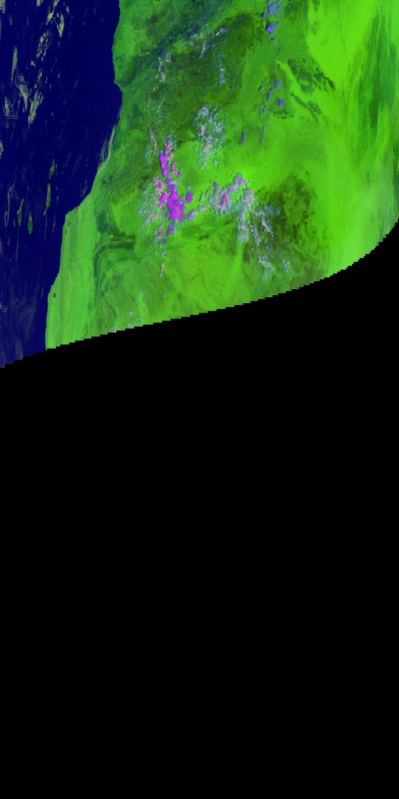

Python-geotiepoints¶
Python-geotiepoints is an application for the interpolation (and extrapolation if needed) of geographical tiepoints into a larger/denser geographical grid. This is usefull when the full resolution lon/lat grid is needed while only a lower resolution grid of tiepoints is available.
Some helper functions are provided to accomodate for satellite data, but the package should be generic enough to be used for any kind of data.
The source code of the module can be found on the github page.
Contents
Installation¶
You can install the latest version of python-geotiepoints with easy_install:
$> easy_install python-geotiepoints
or pip:
$> pip install python-geotiepoints
Alternatively, you can download the source code from github:
$> git clone git://github.com/adybbroe/python-geotiepoints.git
and then run:
$> python setup.py install
or, if you want to hack the package:
$> python setup.py develop
Usage¶
A typical usage of the package.
>>> from geotiepoints import SatelliteInterpolator
>>> import numpy as np
>>> tie_cols = np.arange(0, 11, 5)
>>> tie_rows = np.arange(0, 5, 2)
>>> fine_cols = np.arange(0, 11)
>>> fine_rows = np.arange(0, 5)
>>> tie_lons = (np.arange(3*3) + 30).reshape((3, 3))
>>> tie_lats = (np.arange(3*3) - 4.5).reshape((3, 3))
>>> interpolator = SatelliteInterpolator((tie_lons, tie_lats),
... (tie_rows, tie_cols),
... (fine_rows, fine_cols),
... 2, 2)
>>> interpolator.interpolate()
(array([[ 30. , 30.20005856, 30.40007805, 30.60006827,
30.800039 , 31. , 31.19996102, 31.39993181,
31.59992209, 31.79994159, 32. ],
[ 31.50205758, 31.70211582, 31.90213504, 32.10212499,
32.30209545, 32.50205617, 32.7020169 , 32.9019874 ,
33.10197739, 33.3019966 , 33.50205476],
[ 33. , 33.2000585 , 33.40007799, 33.60006824,
33.80003899, 34. , 34.19996101, 34.39993178,
34.59992203, 34.79994152, 35. ],
[ 34.49794665, 34.69800483, 34.89802404, 35.09801402,
35.29798451, 35.49794524, 35.69790597, 35.89787643,
36.09786639, 36.29788561, 36.49794383],
[ 36. , 36.20005843, 36.40007793, 36.6000682 ,
36.80003898, 37. , 37.199961 , 37.39993174,
37.59992197, 37.79994146, 38. ]]), array([[ -4.50000000e+00, -4.29998537e+00, -4.09998049e+00,
-3.89998294e+00, -3.69999025e+00, -3.50000000e+00,
-3.30000975e+00, -3.10001705e+00, -2.90001949e+00,
-2.70001461e+00, -2.50000000e+00],
[ -2.99948561e+00, -2.79947101e+00, -2.59946617e+00,
-2.39946865e+00, -2.19947600e+00, -1.99948578e+00,
-1.79949556e+00, -1.59950291e+00, -1.39950538e+00,
-1.19950054e+00, -9.99485958e-01],
[ -1.50000000e+00, -1.29998538e+00, -1.09998050e+00,
-8.99982941e-01, -6.99990252e-01, -5.00000000e-01,
-3.00009747e-01, -1.00017058e-01, 9.99805052e-02,
2.99985379e-01, 5.00000000e-01],
[ -5.13865763e-04, 1.99500719e-01, 3.99505557e-01,
5.99503086e-01, 7.99495741e-01, 9.99485958e-01,
1.19947617e+00, 1.39946883e+00, 1.59946635e+00,
1.79947119e+00, 1.99948578e+00],
[ 1.50000000e+00, 1.70001462e+00, 1.90001949e+00,
2.10001705e+00, 2.30000975e+00, 2.50000000e+00,
2.69999025e+00, 2.89998294e+00, 3.09998050e+00,
3.29998537e+00, 3.50000000e+00]]))
Example - Aqua/Terra MODIS data¶
The application is currently being used in operation at SMHI to upsample the thinned MODIS products received via EUMETCast. For this purpose the performance is good, both in terms of achieved accuracy and processing speed.
EUMETSAT is relaying Terra and Aqua MODIS level 1 data from NOAA in real time for the European User community. The data are disseminated via EUMETCast and can be received with a common DVB antenna. Before uploading it EUMETSAT is thinning the data to contain only a subset of MODIS channels, and also data are being filtered so only data over the European area are being sent.
The radiance data (reflectances and brightness temperatures) are in 1km resolution but contain geolocation only on a thinned grid - on tiepoints every 5th km. So in order to project and further process the data we need to upsample or interpolate and exrapolate the data to the full 1km grid.
We have checked the accuracy against the full resolution geolocation data. These full geolocation data were available previously in seperate files on the same EUMETCast stream. But due to the significant band width occupied and the relatively modets usage of the data EUMETSAT decided to stop this dissemination in February 2012 and save costs and band width for other products. With this tool the need for the full resolution geolocation is no more as critical as before.
There is one significant issue here, however, which is that the geolocation provided in the MODIS level1b products are terrain corrected. So in order to restore the full 1km geolocation data from the thinned tiepoint gridded data now available on EUMETCast one would need access to the exact terrain model used in the MODIS processing, and also some more advanced method than what is provided with this application.
But outside areas with high and rough topography the accuracy is rather good using this tool. Below is an example with a 5 minute granule over Western Africa and the Canary Islands from August 21st, 2011. First we show the accuracy of the geolocation after interpolation. And then the image data first the raw unprojected granule, and then the projected (1km Mercator) data.
Comparing interpolated lon,lat with the true ones for the granule shown below.

We see that the method applied give deviations far less than one pixel, except for a few pixels towards the edge of the swath. These larger deviations we refer to the inherrent problem of interpolating terrain corrected geolocation without the knowledge of the terrain model used.
Below is an RGB image of the granule.
And here the projected data.

Predefined functions for satellite data¶
- geotiepoints.metop20kmto1km(lons20km, lats20km)¶
Getting 1km geolocation for metop avhrr from 20km tiepoints.
- geotiepoints.modis5kmto1km(lons5km, lats5km)¶
Getting 1km geolocation for modis from 5km tiepoints.
- geotiepoints.modis1kmto500m(lons1km, lats1km)¶
Getting 500m geolocation for modis from 1km tiepoints.
- geotiepoints.modis1kmto250m(lons1km, lats1km)¶
Getting 250m geolocation for modis from 1km tiepoints.